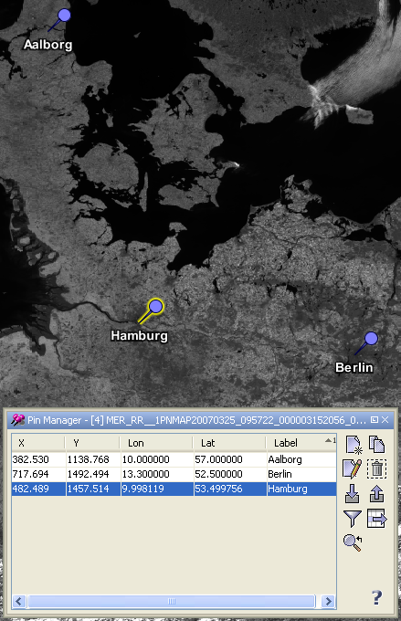
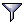
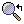
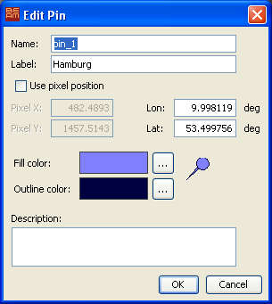

| Pin Management | |
A pin is a marker for a certain geographical position within a geo-referenced image. The properties of a pin are
Pins are displayed as symbols at their geographical positions in image views associated
with the current product. Pins are stored in the current product and available again if the
product is re-opened.
In VISAT, pins can be used to "freeze" the
Pixel Info View and the
Spectrum View to the selected pin in order to display
the values of the pixel associated with the selected pin.
New pins can be created with the Pin Tool and removed using the
delete pin command in the Edit Menu.
It is also possible to create and remove pins by using the Pin Manager.
When creating a spatial subset of a product which contains pins, the pins located outside of the spatial area will not be copied to the resulting product.
The Pin Tool 
The Pin Tool is used to create a new pin. If the Pin Tool is active, a click into an image view
creates a new pin at the current cursor position.
The Select Tool 
Selecting existing pins can be done with the Select Tool. If you click on an existing pin with the Select Tool
it becomes the selected pin. If you double-click on an existing pin the Edit Pin dialog
appears
and lets you edit the properties of the selected Pin.
The pin manager is used to display all pins stored in the current product within a table and provides some pin related operations.

If you click on a pin within the table it becomes the selected pin.
Double-clicking on pin in the table opens the Edit Pin dialog.
You can also change the values for X, Y , Lat and Lon of the pin by editing the table cells directly.
In the following the tool buttons of the pin manager are explained.
| Creates a new pin and adds it to the product. | |
| Creates a new pin by cloning the selected pin. | |
| Opens the edit dialog for the selected pin. | |
| Removes the selected pin from the current product. | |
| Imports multiple pins from a flat text or XML file. | |
| Exports the selected pins to an XML file. | |
|  | Enables the expansion of the table with pixel values. |
| Exports selected part of the displayed table to a flat text file. The exported text is tabulator-separated and may therefore be import directly into a spreadsheet application (e.g. MS Excel). | |
|  | Centers the image view on the selected pin. |
The pin edit dialog is used to edit the properties of a pin after a new pin has been created or after a selected pin has been double-clicked. This dialog is also available in the pin manager.

The editable pin properties are
The graphical properties of the pin can be set by entering cascading style sheets into the 'Style css'-field. Allowed properties are:
Example:
symbol:pin;fill:#00AAFF;fill-opacity:0.0;stroke:#FF00FF;stroke-opacity:0.2;stroke-width:0.5
However, it is easier by far to edit the pin's styles using the Layer Editors.